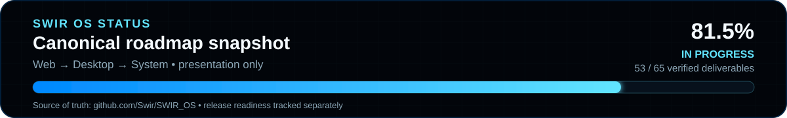

01 // SYSTEM
Linux at the core
System Edition targets a maintained Linux foundation with native Linux applications and a managed Wine/Proton compatibility layer for Windows software.
SWIR OS is being developed as a maintained Web Edition, a Windows Desktop Edition and a Linux-native System Edition with Live USB, guarded installation, native applications and managed Windows compatibility.
Three editions share SWIR design and portable contracts where appropriate, while the System Edition replaces browser-only foundations with native Linux services and applications.
The Linux-native edition now has a VM-verified UEFI Live USB path, a GTK4 installer that drives the guarded installation flow, and standalone graphical boot after the source USB is removed. Physical hardware qualification remains open.
The preview reflects the verified architecture direction being developed in the dedicated SWIR_OS repository.
System Edition targets a maintained Linux foundation with native Linux applications and a managed Wine/Proton compatibility layer for Windows software.
The disposable UEFI VM path verifies USB-mass-storage boot, guarded target review, GTK4 installation, source-USB removal and installed graphical boot with persistence.
PCI/USB hardware detection, trusted driver sources, firmware status and journaled mutation foundations — without random binary driver downloads.
SWIR Store and Package Core coordinate trusted distribution packages and managed compatibility profiles, with Flatpak/AppImage still gated as experimental paths.
Automatic locale detection, English fallback, RTL support and bundled language resources are part of the platform direction.
Target-bound confirmation, source-media rejection, package trust, transaction journals, recovery and rollback boundaries are treated as core system features.
